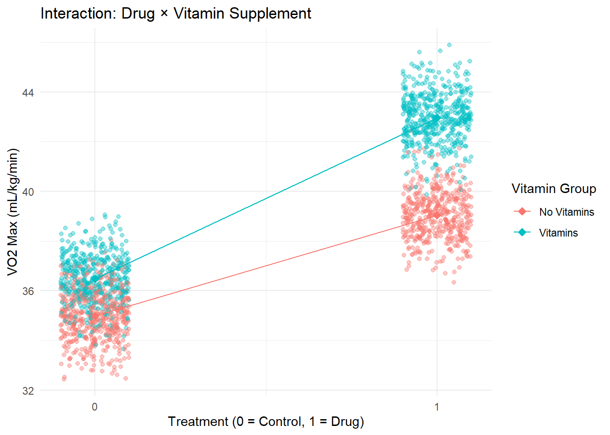

4 Effect Modification and Interaction
Class materials
Slides: Module 4
Recording: Module 4, Part 1
Recording: Module 4, Part 2
Textbook reading
Supplementary reading
Freedman, D. A. (2008). On types of scientific inquiry: The role of RCTs in health policy. Journal of the Royal Statistical Society: Series A, 171(2), 359–385. Examples of quasi-experiments from public health and education
Topics covered
- Effect modification and adjustment methods
- Interaction
- Identifying interaction
- Effect modification vs interaction
- Critical reading exercise: evaluating effect modification and interaction in studies
4.1 Effect Modification and Adjustment Methods
Effect modification occurs when the effect of an exposure on an outcome differs depending on the level of another variable. Unlike confounding, which biases the estimated effect, effect modification reflects a real variation in the causal effect across different subgroups. Recognizing effect modification is important because it can reveal that a treatment or exposure is beneficial for some groups but not for others. Adjustment methods like stratification or including interaction terms in regression models help detect and describe effect modification rather than “control” it away. When we study effect modification, we are asking causal questions such as “What the effect of a treatment for group 1 vs the effect for group 2?”
Adjustment methods typically aim to control for confounding, but they can also be used to detect effect modification when interaction terms are included. When effect modification is present, a single summary effect estimate (like an overall average) can be misleading. Instead, researchers often report subgroup-specific effects. Careful modeling and interpretation are necessary to distinguish between true effect modification and residual confounding.
Simulation to Demonstrate Effect Modification
Let’s say we are interested in understanding the effect of new drug on a person’s VO2 max for young vs old people. For example, this drug might be more effective for young people. VO2 max is the maximum amount of oxygen your body can utilize during exercise. VO2 max is measured in mL per kg of body weight per minute. In this simulation, the drug increases VO2 max by 4 mL/kg/min for old people, and 7.5 mL/kg/min for young people.
set.seed(123)
n <- 2000
treatment <- rbinom(n, 1, 0.5) # drug
age_group <- rbinom(n, 1, 0.5) # 1 = young, 0 = old
baseline <- 35 # baseline VO2 max is 35 mL/kg/min
vo2_max <- baseline +
4 * treatment +
0.5 * age_group +
3.5 * (treatment * age_group) +
rnorm(n, mean = 0, sd = 1)
df <- data.frame(vo2_max, treatment, age_group)
naive_model <- lm(vo2_max ~ treatment + age_group, data = df)
adjusted_model <- lm(vo2_max ~ treatment + age_group + treatment * age_group, data = df)
summary(naive_model)##
## Call:
## lm(formula = vo2_max ~ treatment + age_group, data = df)
##
## Residuals:
## Min 1Q Median 3Q Max
## -3.7165 -0.9743 -0.0066 0.9249 3.8438
##
## Coefficients:
## Estimate Std. Error t value Pr(>|t|)
## (Intercept) 34.17826 0.04955 689.75 <2e-16 ***
## treatment 5.76923 0.05850 98.62 <2e-16 ***
## age_group 2.18968 0.05850 37.43 <2e-16 ***
## ---
## Signif. codes: 0 '***' 0.001 '**' 0.01 '*' 0.05 '.' 0.1 ' ' 1
##
## Residual standard error: 1.306 on 1997 degrees of freedom
## Multiple R-squared: 0.8527, Adjusted R-squared: 0.8526
## F-statistic: 5780 on 2 and 1997 DF, p-value: < 2.2e-16##
## Call:
## lm(formula = vo2_max ~ treatment + age_group + treatment * age_group,
## data = df)
##
## Residuals:
## Min 1Q Median 3Q Max
## -3.0857 -0.6261 -0.0042 0.6543 3.3876
##
## Coefficients:
## Estimate Std. Error t value Pr(>|t|)
## (Intercept) 34.98227 0.04273 818.756 < 2e-16 ***
## treatment 4.05124 0.06246 64.866 < 2e-16 ***
## age_group 0.49082 0.06211 7.903 4.47e-15 ***
## treatment:age_group 3.43225 0.08828 38.880 < 2e-16 ***
## ---
## Signif. codes: 0 '***' 0.001 '**' 0.01 '*' 0.05 '.' 0.1 ' ' 1
##
## Residual standard error: 0.9855 on 1996 degrees of freedom
## Multiple R-squared: 0.9162, Adjusted R-squared: 0.9161
## F-statistic: 7272 on 3 and 1996 DF, p-value: < 2.2e-16If we look only at the naive model without considering effect modification, then we would have incorrectly concluded that the drug impacts young and old people in the same way, adding 5.76 mL/kg/min to a patient’s VO2 max on average.
If we look at the adjusted model considering effect modification, then we see that we more accurately estimate the ground truths. We also have the correct interpretation that the drug’s effect varies depending on whether the patient is young or old. For old people, the drug is estimated to increase the VO2 max by 4.05. For young people, the drug is estimated to increase the VO2 max by 4.05 + 3.43 = 7.48. So the drug is 3.43 units more effective in young people.
The following plot shows how younger patients benefit more from the drug than older patients.
df_grouped <- df |>
mutate(age_group = ifelse(age_group == 1, "Young", "Old"))
ggplot(df_grouped, aes(x = treatment, y = vo2_max, color = age_group)) +
geom_jitter(width = 0.1, alpha = 0.4) +
stat_summary(fun = mean, geom = "point", size = 3, shape = 18) +
stat_summary(fun = mean, geom = "line", aes(group = age_group)) +
scale_x_continuous(breaks = c(0, 1)) +
labs(title = "Effect Modification: Drug and Age Category",
x = "Treatment (0 = Control, 1 = Drug)",
y = "VO2 Max (mL/kg/min)",
color = "Age Category") +
theme_minimal()4.2 Interaction
When we study interactions, we are trying to understand the joint effect of two or more treatments on a certain outcome. So we answer the causal question “What is the combined effect of treatment 1 and treatment 2 on an outcome?”.
Simulation to Demonstrate Interaction
Let’s say we are interested in understanding the effect of new drug and taking vitamin supplements on a person’s VO2 max. Assume for this example that the patients who take vitamin supplements take the same supplements in the same dosage. In this simulation, the drug increases VO2 max by 4 mL/kg/min, vitamins increase VO2 max by 1.5 mL/kg/min, and taking both the drug and vitamins adds an addition 2.5 mL/kg/min to the VO2 max.
set.seed(123)
n <- 2000
A_1 <- rbinom(n, 1, 0.5) # drug
A_2 <- rbinom(n, 1, 0.5) # vitamin supplementation
baseline <- 35 # baseline VO2 max is 35 mL/kg/min
vo2_max <- baseline +
4 * A_1 +
1.5 * A_2 +
2.5 * (A_1 * A_2) +
rnorm(n, mean = 0, sd = 1)
df <- data.frame(vo2_max, A_1, A_2)
naive_model <- lm(vo2_max ~ A_1 + A_2, data = df)
adjusted_model <- lm(vo2_max ~ A_1 + A_2 + A_1 * A_2, data = df)
summary(naive_model)##
## Call:
## lm(formula = vo2_max ~ A_1 + A_2, data = df)
##
## Residuals:
## Min 1Q Median 3Q Max
## -3.4558 -0.8316 0.0082 0.7735 3.6096
##
## Coefficients:
## Estimate Std. Error t value Pr(>|t|)
## (Intercept) 34.41251 0.04392 783.61 <2e-16 ***
## A_1 5.26868 0.05184 101.62 <2e-16 ***
## A_2 2.69471 0.05184 51.98 <2e-16 ***
## ---
## Signif. codes: 0 '***' 0.001 '**' 0.01 '*' 0.05 '.' 0.1 ' ' 1
##
## Residual standard error: 1.158 on 1997 degrees of freedom
## Multiple R-squared: 0.8723, Adjusted R-squared: 0.8722
## F-statistic: 6820 on 2 and 1997 DF, p-value: < 2.2e-16##
## Call:
## lm(formula = vo2_max ~ A_1 + A_2 + A_1 * A_2, data = df)
##
## Residuals:
## Min 1Q Median 3Q Max
## -3.0857 -0.6261 -0.0042 0.6543 3.3876
##
## Coefficients:
## Estimate Std. Error t value Pr(>|t|)
## (Intercept) 34.98227 0.04273 818.76 <2e-16 ***
## A_1 4.05124 0.06246 64.87 <2e-16 ***
## A_2 1.49082 0.06211 24.00 <2e-16 ***
## A_1:A_2 2.43225 0.08828 27.55 <2e-16 ***
## ---
## Signif. codes: 0 '***' 0.001 '**' 0.01 '*' 0.05 '.' 0.1 ' ' 1
##
## Residual standard error: 0.9855 on 1996 degrees of freedom
## Multiple R-squared: 0.9075, Adjusted R-squared: 0.9073
## F-statistic: 6526 on 3 and 1996 DF, p-value: < 2.2e-16If we look at the naive model, we would conclude that the drug increase VO2 max by 5.26 and the vitamins increase VO2 max by 2.69. But this isn’t the truth. The naive model doesn’t capture the combined effect of taking both the drug and vitamins, which is capture in the adjusted model using an interaction term.
Based on the adjusted model, we would conclude that the drug increases VO2 max by 4.05, the vitamins increase VO2 max by 1.49, and taking both adds 2.43 mL/kg/min to one’s VO2 max on average. This is closer to the ground truth that we established when explaining the simulation.
This plot shows that taking the drug increases VO2 max, but also taking vitamins with the drug has an combined effect that increases VO2 max.
# library(ggplot2)
# library(dplyr)
df_grouped <- df |>
mutate(vitamin_group = ifelse(A_2 == 1, "Vitamins", "No Vitamins"))
ggplot(df_grouped, aes(x = A_1, y = vo2_max, color = vitamin_group)) +
geom_jitter(width = 0.1, alpha = 0.4) +
stat_summary(fun = mean, geom = "point", size = 3, shape = 18) +
stat_summary(fun = mean, geom = "line", aes(group = vitamin_group)) +
scale_x_continuous(breaks = c(0, 1)) +
labs(title = "Interaction: Drug × Vitamin Supplement",
x = "Treatment (0 = Control, 1 = Drug)",
y = "VO2 Max (mL/kg/min)",
color = "Vitamin Group") +
theme_minimal()
In this simulation, we learned that when we are interested in measuring the effect of multiple treatments on an outcome, it’s important to consider the combined effect of these treatments. We achieve this by adding an interaction term in our regression model.
4.3 Identifying Interaction
Identifying interaction is crucial when studying causal relationships because it tells us whether there is a combined effect of two or more treatments on an outcome. Rather than being a source of bias like confounding, interaction reveals real differences in how subgroups respond to exposures or treatments. Detecting interaction helps researchers understand for whom and under what conditions an intervention works best, allowing for more tailored public health strategies and clinical recommendations.
In our simulation with the drug and vitamin supplements, interaction was present because there was a combined effect of the drug and vitamin supplementation on VO2 max. In particular, patients that took both had the largest increases in VO2 max. By fitting a model with an interaction term between the drug and vitamin use, we were able to identify and quantify this combined interaction effect. Without testing for interaction, we would have incorrectly assumed that the drug and the vitamins independently improve VO2 max.
4.4 Effect Modification vs Interaction
Effect modification and interaction are closely related concepts, but they serve slightly different purposes in causal analysis. The confusing part is when we try to model both effect modification and interaction, we do it the same way with an interaction term in the regression. However, the difference between the two concepts is in the causal questions we are trying to answer.
In effect modification, we are trying to understand how the effect of a single treatment varies based on levels of another factor like age or sex assigned at birth.
In interaction, we are trying to understand the combined effect of two or more treatments such as a drug and vitamin supplementation.